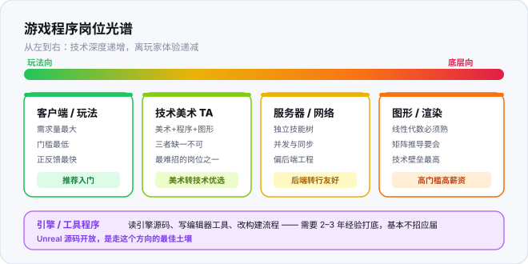

01 · 岗位与行业现实
在投入几百小时之前，你至少该知道：这个行业有哪些岗位、分别要什么能力、薪资大概什么水平、以及有哪些坑。这一页不讲技术，讲选择和判断。
关于本页数据
下面所有薪资数字来自公开招聘信息与从业者访谈的汇总，是区间而非承诺。具体数字受城市、公司规模、个人能力影响极大，请当作量级参考，不要当作谈判依据。
行业变化很快，如果你看到这一页时数据已经明显过时，以你在招聘网站上看到的最新信息为准。
行业变化很快，如果你看到这一页时数据已经明显过时，以你在招聘网站上看到的最新信息为准。
一、岗位全景
游戏开发不是"一个岗位"，而是一条从内容到技术的谱系。不同岗位的能力要求、成长路径、薪资天花板差别极大，先认清自己在谱系的哪个位置。

| 岗位 | 做什么 | 核心技能 | 人数占比 |
|---|---|---|---|
| Gameplay 程序 | 写玩法逻辑：技能、战斗、任务、UI 交互 | 引擎 API 熟练 + 架构能力 | 最多 约 50% |
| 系统程序 | 背包、邮件、活动、充值等系统模块 | 业务抽象 + 数据结构 | 约 20% |
| UI / 交互程序 | 界面逻辑、动效、多分辨率适配 | UGUI/TMP + 美术协作 | 约 10% |
| 工具 / 编辑器程序 | 给策划美术做工具，提升团队效率 | 编辑器扩展 + 自动化 | 约 8% |
| 引擎 / 图形程序 | 渲染管线、性能优化、引擎改造 | 图形学 + C++ + 硬件知识 | 最少 约 7% |
| 网络 / 服务端程序 | 同步、匹配、后端服务 | 网络协议 + 分布式 | 约 5% |
给新手的选型建议
90% 的新手应该从 Gameplay 程序入门。它是需求量最大的岗位，也是最容易积累作品的方向——你做的每个小游戏都是作品。
不要一上来就冲"引擎/图形程序"。那个方向需要扎实的图形学和 C++ 基础，通常是工作 3–5 年后的转型目标。
工具程序是被低估的方向。门槛不高、需求稳定、而且能深入理解引擎——做工具的人往往比写玩法的人更懂引擎。
不要一上来就冲"引擎/图形程序"。那个方向需要扎实的图形学和 C++ 基础，通常是工作 3–5 年后的转型目标。
工具程序是被低估的方向。门槛不高、需求稳定、而且能深入理解引擎——做工具的人往往比写玩法的人更懂引擎。
二、真实 JD 拆解
下面是一条综合了多个真实招聘信息的 Unity 客户端岗位描述。我拆开逐条解释——招聘要求里的每一句，都对应着本站的某个页面。
JD 原文（典型初中级 Unity 客户端）
岗位职责
1. 负责游戏客户端功能模块的设计与开发；
2. 与策划、美术协作，实现游戏玩法与表现；
3. 参与客户端性能优化，解决卡顿、内存等问题；
4. 参与技术方案评审，撰写技术文档。
任职要求
1. 本科及以上学历，计算机相关专业优先；
2. 2 年以上 Unity 开发经验，熟悉 C#；
3. 熟悉 Unity 引擎架构与常用组件；
4. 理解面向对象设计，有良好的编码习惯；
5. 有性能优化经验者优先；
6. 熟悉 UGUI / 热更新 / 网络同步者加分。
逐条对照：这句话到底在考什么
| JD 原文 | 真实含义 | 页面 |
|---|---|---|
| "熟悉 C#" | 不只是语法。会问值/引用类型、GC、委托与事件、协程原理 | 03–08 |
| "熟悉引擎架构" | 会问生命周期执行顺序、组件通信方式、预制体机制 | 11 |
| "理解面向对象" | 会问接口与抽象类的选择、设计模式的实际应用 | 04、20 |
| "性能优化经验" | 最高含金量的一条。会问 GC 分配来源、Draw Call 合批规则、Profiler 使用 | 21、17、07 |
| "熟悉的 UGUI" | 不只说会用。会问 Canvas 重建机制、如何减少重绘 | 14 |
| "热更新" | 会问 AssetBundle 依赖管理、Addressables、热更方案对比 | 16 |
| "网络同步" | 会问 帧同步 vs 状态同步的区别与取舍 | 22 |
| "良好的编码习惯" | 会看你的代码：命名、注释、拆分类、错误处理 | 25 |
"有性能优化经验者优先"是分水岭
你会发现几乎所有中高级 JD 都有这一条。它是新手和熟手之间最清晰的分界线。
为什么？因为性能问题不会报错。代码能跑、功能正常，只是手机上卡。要定位它，你需要理解 GC 触发机制、Draw Call 合批条件、内存布局对缓存的影响——这些全都是"知道原理才能查"的东西。
所以本站把性能内容提前到语言线里（页 07），而不是留到最后。
为什么？因为性能问题不会报错。代码能跑、功能正常，只是手机上卡。要定位它，你需要理解 GC 触发机制、Draw Call 合批条件、内存布局对缓存的影响——这些全都是"知道原理才能查"的东西。
所以本站把性能内容提前到语言线里（页 07），而不是留到最后。
三、薪资区间
下面是中国大陆 Unity 客户端岗位的大致薪资区间（一线城市，2024–2025 年数据）。注意这只是游戏程序员的薪资，不是"做游戏的人"的薪资——策划、美术的薪资结构完全不同。
| 级别 | 经验 | 月薪区间 | 能力门槛 | 关键跃迁点 |
|---|---|---|---|---|
| 初级 | 0–2 年 | 8–15K | 能独立完成模块开发 | 从"能实现"到"会设计" |
| 中级 | 2–5 年 | 15–30K | 能负责整个系统，能定位性能问题 | 从"会做"到"做得快且稳" |
| 高级 | 5–8 年 | 30–50K | 能主导技术方案，能带人 | 从"解决"到"预防" |
| 专家 / 主程 | 8 年+ | 50–80K+ | 能决定技术选型，对项目成败负责 | 从"技术"到"技术 + 判断力" |
几个容易误解的点
① 薪资差异主要来自"能不能解决别人解决不了的问题"，不是写了多少行代码。
② 大厂溢价明显。同样能力，大厂可能比中小厂高 30–50%，但大厂对"基础扎实度"要求也高得多。
③ 外包岗位薪资普遍低 30% 以上，且成长空间有限。应届生如果只有外包 offer，可以作为跳板但要尽快跳出来。
④ Unreal 岗位比 Unity 少很多，但同等经验薪资普遍高 20–40%——这是技术壁垒的溢价。
② 大厂溢价明显。同样能力，大厂可能比中小厂高 30–50%，但大厂对"基础扎实度"要求也高得多。
③ 外包岗位薪资普遍低 30% 以上，且成长空间有限。应届生如果只有外包 offer，可以作为跳板但要尽快跳出来。
④ Unreal 岗位比 Unity 少很多，但同等经验薪资普遍高 20–40%——这是技术壁垒的溢价。
四、必须知道的行业风险
四个真实存在的风险
① 版号与政策风险。国内游戏上线需要版号，审批周期长且不确定。这直接影响到公司的新项目立项与招聘节奏——行业有明显的周期性波动。
② 项目砍掉的概率很高。你参与的下一款游戏，有很大概率活不到上线。这意味着你的简历上可能有几个"没做完的项目"，面试时要能解释清楚你在其中做了什么。
③ 加班强度普遍偏高。尤其在项目冲刺期（版本发布前）。不同公司差异很大，面试时一定要问清楚团队的版本节奏和加班情况。
④ AI 正在改变初级岗位的构成。重复性的样板代码工作正在减少，但对"能判断方案好坏"的人需求在增加。这意味着纯执行型岗位的竞争会更激烈。
② 项目砍掉的概率很高。你参与的下一款游戏，有很大概率活不到上线。这意味着你的简历上可能有几个"没做完的项目"，面试时要能解释清楚你在其中做了什么。
③ 加班强度普遍偏高。尤其在项目冲刺期（版本发布前）。不同公司差异很大，面试时一定要问清楚团队的版本节奏和加班情况。
④ AI 正在改变初级岗位的构成。重复性的样板代码工作正在减少，但对"能判断方案好坏"的人需求在增加。这意味着纯执行型岗位的竞争会更激烈。
五、岗位选择自查表
看完上面的内容，用下面 6 个问题定位自己。诚实回答，这一页的价值就在这里。
| 问题 | 如果你的回答是… | 建议方向 |
|---|---|---|
| 你能接受每天 3 小时以上的持续学习吗？ | 不能 | 需要重新考虑这个行业的学习曲线很长 |
| 你更喜欢"做出来"还是"搞明白"？ | 做出来 | 偏向 Gameplay / 独立开发 |
| 你更喜欢"做出来"还是"搞明白"？ | 搞明白 | 偏向 引擎 / 图形 / 工具 |
| 你能忍受"代码能跑但很慢"这种问题吗？ | 不能忍 | 性能优化方向很适合你 |
| 你愿意和策划美术大量沟通吗？ | 愿意 | Gameplay 程序（沟通占比很高） |
| 你希望有稳定的收入来源吗？ | 希望 | 先把本职做好，独立开发当副业 |
六、本章动手任务
本章过关标准：
① 能说清 Gameplay 程序和引擎程序的区别，以及自己现在该走哪条；
② 能解释"有性能优化经验者优先"这句话为什么是分水岭；
③ 对行业的加班、版号、项目砍掉这些风险有心理准备，而不是只看薪资数字。